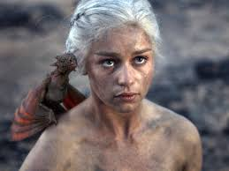
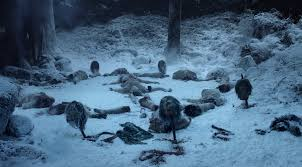
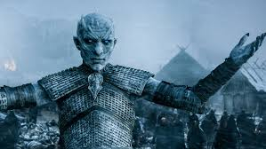

I ett land där somrarna är decennier långa och vintrarna kan vara en livstid, är det oroligheter. Från den intrigerande södern och de vilda länderna i öster till den frusna norden och den uråldriga muren som skyddar riket från mörkret bortom den, håller två mäktiga familjer på med en katt-och-råtta-lek om vem som ska styra de Sju Kungarikena i Westeros. Medan svek, lust, intriger och övernaturliga krafter skakar dessa kungariken i grunden, kommer kampen om Järntronen att få oförutsedda och långtgående följder. Vintern kommer. Kampen om Järntronen kan börja.
Vill du se mer av serien, klicka här   